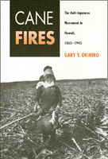

A history of a systematic anti-Japanese movement in Hawaii from the time migrant workers were brought to the sugar cane fields until the end of World War II
A history of a systematic anti-Japanese movement in Hawaii from the time migrant workers were brought to the sugar cane fields until the end of World War II


 A history of a systematic anti-Japanese movement in Hawaii from the time migrant workers were brought to the sugar cane fields until the end of World War II
A history of a systematic anti-Japanese movement in Hawaii from the time migrant workers were brought to the sugar cane fields until the end of World War II

|  |
Cane FiresThe Anti-Japanese Movement in Hawaii, 1865-1945Gary Y. Okihiropaper EAN: 978-0-87722-945-2 (ISBN: 0-87722-945-7) |
Outstanding Book in History and Social Science Award, Association for Asian American Studies, 1992
"Okihiro's account is an important corrective to our understanding of the Japanese American Experience in World War II."
—The Hawaiian Journal of History
Challenging the prevailing view of Hawaii as a mythical "racial paradise," Gary Okihiro presents this history of a systematic anti-Japanese movement in the islands from the time migrant workers were brought to the sugar cane fields until the end of World War II. He demonstrates that the racial discrimination against Japanese Americans that occurred on the West Coast during the second World War closely paralleled the less familiar oppression of Hawaii’s Japanese, which evolved from the production needs of the sugar planters to the military’s concern over the "menace of alien domination."
Okihiro convincingly argues that those concerns motivated the consolidation of the plantation owners, the Territorial government, and the U.S. military-Hawaii’s elite-into a single force that propelled the anti-Japanese movement, while the military devised secret plans for martial law and the removal and detention of Japanese Americans in Hawaii two decades before World War II.
Excerpt available at www.temple.edu/tempress
"Scholars of American race relations will want to read this book. So will anyone interested in Hawaii's history or in the experiences of Japanese or Asian Americans. It will go far in putting to rest any residual notion that the WWII experiences of the Japanese Americans represented 'aberration' or 'hysterical' reaction to wartime exigencies."
—Franklin S. Odo, University of Hawaii at Manoa
"A well-researched and well-written treatment of the subject."
—Library Journal
Illustrations
Preface
Part I: Years of Migrant Labor, 1986-1909
1. So Much Charity, So Little Democracy
2. Hole Hole Bushi
3. With the Force of Wildfire
Part II: Years of Dependency, 1910-1940
4. Cane Fires
5. In the National Defense
6. Race War
7. Extinguishing the Dawn
8. Dark Designs
Part III: World War II, 1941-1945
9. Into the Cold Night Rain
10. Bivouac Song
11. In Morning Sunlight
Notes
Index
Gary Y. Okihiro is Associate Professor of History at Cornell University.
American Studies
Asian American Studies
Asian American History and Culture, edited by K. Scott Wong, Linda Trinh Võ, and Cathy Schlund-Vials.
Founded by Sucheng Chan in 1991, the Asian American History and Culture, series has sponsored innovative scholarship that has redefined, expanded, and advanced the field of Asian American studies while strengthening its links to related areas of scholarly inquiry and engaged critique. Like the field from which it emerged, the series remains rooted in the social sciences and humanities, encompassing multiple regions, formations, communities, and identities. Extending the vision of founding editor Sucheng Chan and emeriti editor Michael Omi and David Palumbo-Liu, series editors K. Scott Wong, Linda Trinh Võ, and Cathy Schlund-Vials continue to develop a foundational collection that embodies a range of theoretical and methodological approaches to Asian American studies.
© 2015 Temple University. All Rights Reserved. This page: http://www.temple.edu/tempress/titles/807_reg.html.